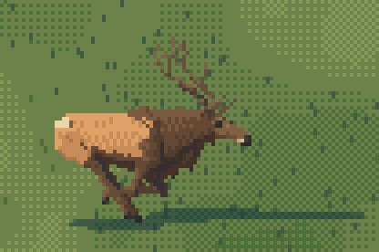
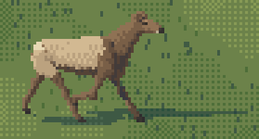
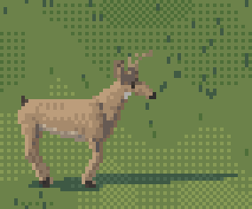
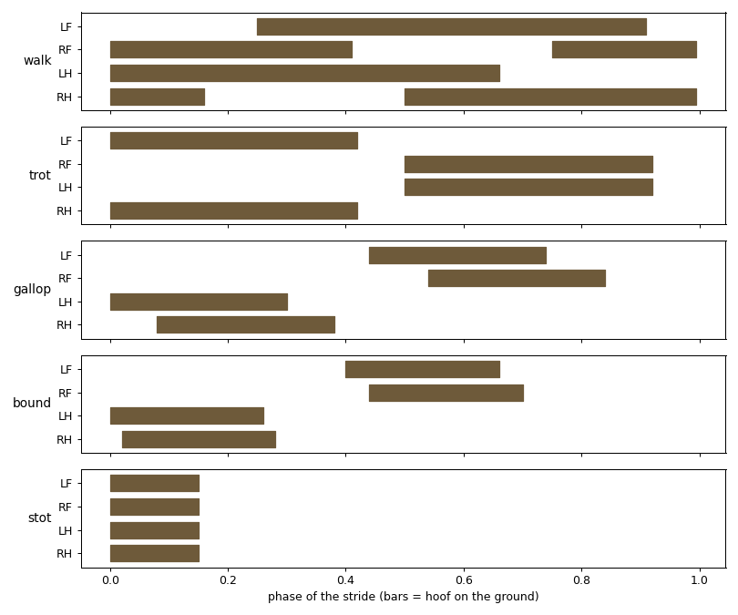
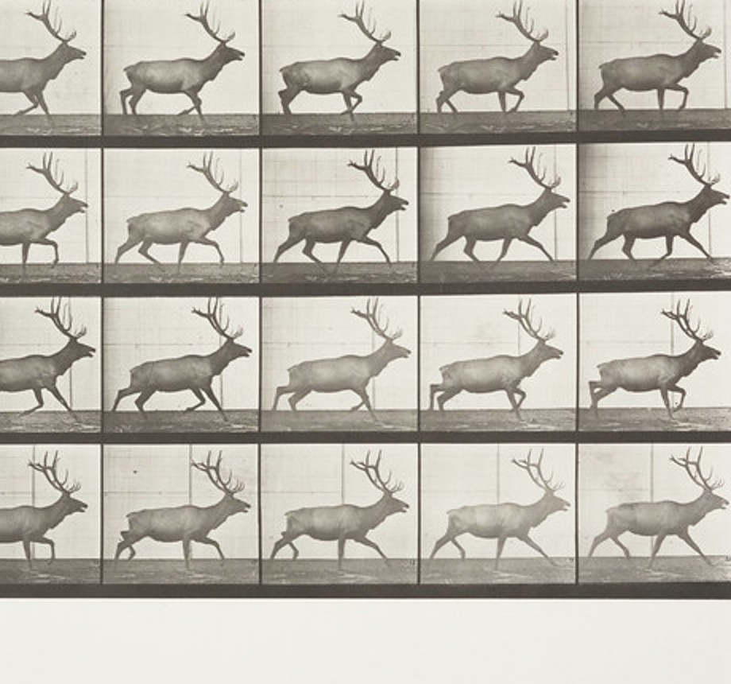
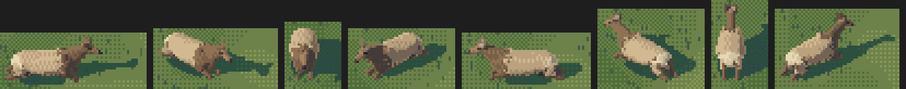
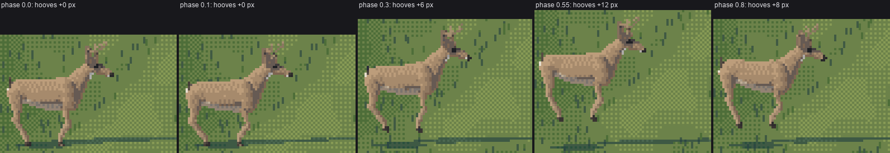
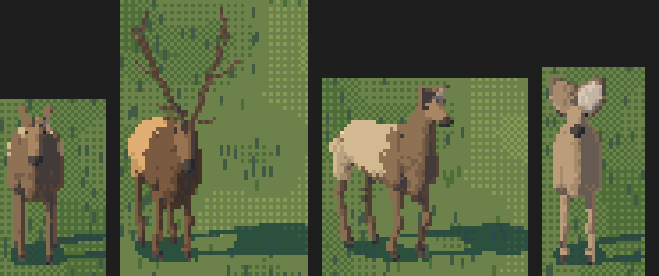

3. Gaits and postures after Muybridge
Back to the tutorial. Code: rig.gait_pose, rig.leg, rig.ik2, anim.py in ~/work/pixelart-studies/elements/deer-elk/src/.
The naturalist's table says behaviour is legible in posture: grazing is the head at the grass with the back line broken; alert is the neck vertical and ears cupped; fleeing is the body stretched. Muybridge's plates say where every hoof is. This page turns both into a pose: a few angles plus a foot target per leg, solved by IK.



The study's own GIFs (anim.py): a bull galloping, a cow trotting, a blacktail buck stotting. 12 frames each.
A pose is angles plus four feet
@dataclass
class Pose:
body_z: float = 0.0 # vertical offset of the whole body
pitch: float = 0.0 # nose up +
flex: float = 0.0 # spine flexion: + arches (gathered), - hollows (extended)
neck_ang: float = 44.0 # neck axis above horizontal
head_ang: float = -24.0 # head axis relative to horizontal (negative = nose down)
ear_ang, ear_fwd, tail_up, mouth, lie ...
legs: dict # name -> ("ik", (x, z), pastern_deg) or ("fk", (a1, a2, a3))
A foot target is where the hoof is (x, and its height off the ground) and the pastern's angle. The leg solves itself: the fetlock is the hoof minus the pastern, and a two-bone IK puts the carpus or hock between the root and the fetlock, bending forward for forelegs and back for hind legs. That's why the forefoot folds up under the chest in the swing without anyone animating it: the target lifts and comes forward, and the joint has nowhere else to go.
Gaits: offsets, duty, stride
Each moving gait is a table. Each leg has a phase offset; for the fraction duty of the stride its hoof is on the ground, sliding back by the stride length; the rest of the time it swings forward on an eased arc, lifted by lf or lh.
"walk": dict(off={"LH": 0.0, "LF": 0.25, "RH": 0.5, "RF": 0.75}, duty=0.66, stride=0.52, lf=0.13, lh=0.10, bob=0.012, neck=32.0, head=-36.0),
"trot": dict(off={"LF": 0.0, "RH": 0.0, "RF": 0.5, "LH": 0.5}, duty=0.42, stride=0.78, lf=0.30, lh=0.18, bob=0.03, neck=46.0, head=-12.0),
"gallop": dict(off={"LH": 0.0, "RH": 0.08, "LF": 0.44, "RF": 0.54}, duty=0.30, stride=1.05, lf=0.26, lh=0.22, bob=0.07, neck=26.0, head=-18.0),
"bound": dict(off={"LH": 0.0, "RH": 0.02, "LF": 0.40, "RF": 0.44}, duty=0.26, stride=1.1, lf=0.34, lh=0.30, bob=0.12, neck=40.0, head=-25.0),
if ph < G["duty"]: # stance: the hoof slides back on the ground
s = ph / G["duty"]
x = ax + S * (0.5 - s); z = 0.0
else: # swing: eased forward, lifted on a sine
s = (ph - G["duty"]) / (1 - G["duty"])
e = 0.5 - 0.5 * np.cos(np.pi * s)
x = ax + S * (-0.5 + e)
z = lift * np.sin(np.pi * s ** (0.8 if fore else 1.1))
past = (-70 if fore else -40) * np.sin(np.pi * s) + ... # the pastern folds in the swing

fig. The footfall diagram the tables produce (bars: hoof on the ground). The walk is a lateral sequence with three feet down most of the time; the trot moves diagonal pairs with a suspension between; the transverse gallop lands hind, hind, fore, fore with a long gathered suspension; the bound puts the hinds down together.
Then each gait moves the body:
- walk: the body bobs twice per stride, and the head nods with each forefoot (
head_ang += 6 sin(4πφ)). Without the nod a walk looks mechanical. - trot: the elk's travelling gait: head high, nose out, a floating suspended trot. The body rises at each suspension.
- gallop and bound: the spine flexes between the gathered suspension (all four under, back arched, phase ≈ 0.82) and the extended one; the pitch rocks; the ears go back and the tail comes up.


nb009, nb100. Muybridge's trot, and mine beside frame 15 reduced to 60 px. My critic called this the best animal in the set.
Postures are tables too
if gait == "alert":
p.neck_ang, p.head_ang, p.ear_fwd = 58.0, -12.0, 1.0 # neck up, head level, ears cupped forward
if gait == "graze":
p.neck_ang, p.head_ang, p.ear_ang = -30.0, -72.0, 10.0
p.legs = {"LF": ("ik", (fx + 0.02, 0.0), 40), "RF": ("ik", (fx - 0.06, 0.0), 40), ...} # forefeet stay back
if gait == "bugle":
p.neck_ang, p.head_ang, p.mouth, p.ear_ang = 32.0, 38.0, 1.0, -10.0 # nose to the sky, jaw open
if gait == "lie":
p.lie = 1.0
p.body_z = -(min(st[2] for st in sp.torso) - 0.04) # the belly on the ground, exactly
p.neck_ang, p.head_ang = 36.0, -22.0
p.legs = {"LF": ("fk", (75, -105, -130)), ...} # knees folded forward, hocks tucked

nb079. Stand, graze, alert, bugle, bedded, then the walk, for cow, bull and doe.
Head carriage is a species mark. My first standing head was 48° nose-down with a long face, which reads as a horse or a moose. The photos say about 24° standing, 12° at the trot, 18° at the gallop. The grazing head needs to be well ahead of the forefeet, or at small sizes it merges with the legs and the cow becomes "a pig or a table".
Two bugs to avoid
The ramp. My first bedded pose lowered the body by a guess and bent the forelegs so one poked out in front: the animal slid down a ramp, or looked hurt.


nb050, nb051. "Bedded."
A bedded body drops by exactly its own lowest belly station; folded forelegs put their knees forward; the hocks tuck beside the body; the head stays up. And the barrel spreads on the ground: the torso's half-width is multiplied by 1 + 0.28 * pose.lie.

nb094. The fixed bedded cow from eight headings in iso.
Stilts. My first stot kept all four hooves on the ground and lifted the body, so the legs lengthened. In a stot the whole animal leaves the ground with stiff legs of fixed length. The fix is to lift the foot targets with the body:
lift = G["bob"] * np.sin(np.pi * (phase - 0.15) / 0.85) # after a brief compressed contact
p.body_z = lift
for name in LEG_NAMES:
p.legs[name] = ("ik", ((fx - 0.05) if fore else (hx + 0.08), max(lift, 0.0)), 14)

fig. The stot today: at phase 0.55 all four hooves are 12 px off the ground (at 48 px body length). It still looks more like a deer floating than a pogo stick; a real stot bunches the legs nearly vertical under an arched back.
Facings
The rig is 3-D, so every yaw works (sheet C). The front view needed a wider stance and a lighter face: from the front an elk's face, dark nose and two big ears are the whole read.

nb074. Front and three-quarter views after the fix.
Where it stops
The gallop and trot hold up against Muybridge; the walk is good; the stot lacks the bunched, arched frame; the bound is plausible but I never had a Muybridge deer bound to check it against frame by frame. There's no turning, no stamping, no head-turned-back bedded pose, though the rig has a neck_turn for it.